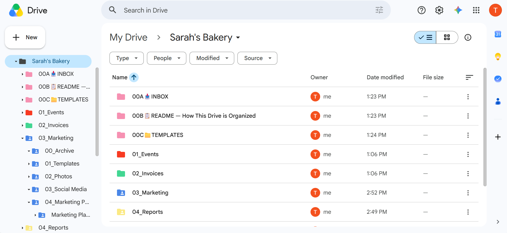

Project
A fully structured, permission-controlled, and documented Google Drive system built for a small business client — covering folder architecture, access management, version recovery, template workflows, and search strategies used daily by professional Virtual Assistants.
This project documents the full Google Drive setup and management workflow built for a simulated small business client — Sarah's Bakery — covering everything a VA handles on day one and ongoing: building a clean folder structure from scratch, setting granular permissions for each team member, recovering accidentally deleted content, organizing files for fast retrieval, and maintaining a template system for recurring documents.
Every decision was made with a real business context in mind — protecting sensitive financial data from the wider team, enabling the social media manager to work without overstepping, and building a structure scalable enough to still make sense 12 months and dozens of files later.
The actual Google Drive folder structure built for Sarah's Bakery — showing the numbered folder system, color coding, and utility folders in a real working Drive.
// Sarah's Bakery Drive — numbered folders · color-coded categories · utility system

The Drive was built with a two-layer system: utility folders at the top (prefixed 00A–00C) for meta-management, and numbered content folders (01–05) for client work. Color coding and emojis make the structure scannable at a glance without opening anything.
Numbers control sort order. Emojis signal folder type. Utility folders use 00A/B/C prefix to float above content folders. Subfolders inherit parent color for instant visual grouping.
| # | Exercise | Skill | Result |
|---|---|---|---|
| 1 | Built complete folder structure for Sarah's Bakery from scratch | Google Drive | ✓ Passed |
| 2 | Shared 04_Reports (Viewer) and 03_Marketing (Editor) with restricted resharing | Drive Permissions | ✓ Passed |
| 3 | Recovered accidentally deleted content using Version History and named version checkpoints | Version History | ✓ Passed |
| 4 | Located all spreadsheet files using file-type filter; starred Marketing Plan for quick access | Drive Search | ✓ Passed |
| 5 | Created template system and produced July copy from master template without touching original | Template Workflow | ✓ Passed |
Every team member gets the minimum access they need — no more. Resharing is disabled for all external collaborators so only the VA and client owner can control who gets in.
| Role | Folder | Permission | Can Edit | Can Reshare |
|---|---|---|---|---|
| Accountant | 04_Reports | Viewer | ✗ | ✗ |
| Social Media Manager | 03_Marketing | Editor | ✓ | ✗ |
| Business Partner | Case by case | Editor | ✓ | ✗ |
| Client (Owner) | Everything | Owner | ✓ | ✓ |
Always uncheck "Allow editors to change permissions and share." Use "Limit access" on sensitive folders (Invoices, Contracts, HR) so parent-folder access doesn't cascade down.
A disorganized client Drive is one of the most common pain points VAs are hired to fix. Files named "Final_FINAL_v2," folders with no structure, and shared links set to "Anyone with the link" are security and productivity risks most clients don't even know they have.
This system gives Sarah's Bakery a Drive that any team member can navigate without asking questions, any sensitive folder locked down from the wrong eyes, and any accidentally deleted content recoverable in under a minute. The numbered + color-coded structure scales to hundreds of files without ever needing a reorganization — new months go into the year subfolder, old files go to Archive, and the root always looks exactly the same.
The same pattern — structure → access → recover → search → template — applies to any client Drive regardless of industry. It's a reusable system, not a one-time setup.